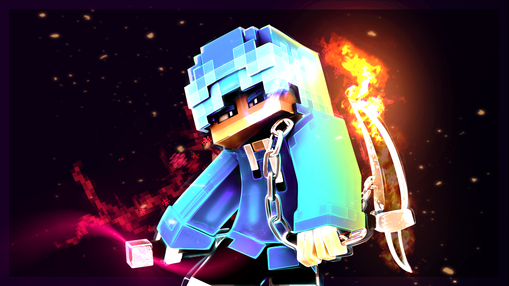
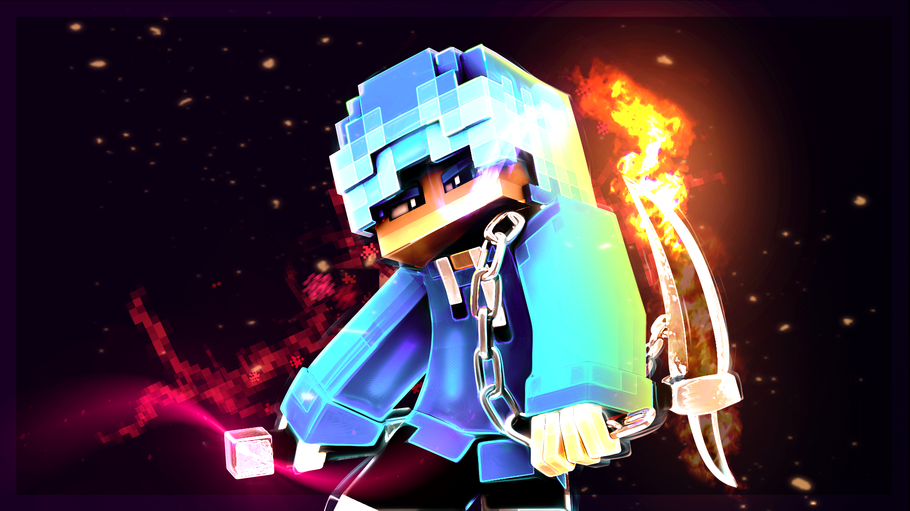

Beginning
Minecraft adalah sebuah permainan sandbox yang dikembangkan oleh pengembang permainan asal Swedia Mojang Studios. Permainan ini dibuat oleh Markus "Notch" Persson dalam bahasa pemrograman Java. Setelah beberapa versi pengujian pribadi awal, permainan ini pertama kali diterbitkan pada Mei 2009 sebelum sepenuhnya dirilis pada November 2011, kemudian Jens "Jeb" Bergensten mengambil alih pengembangan. Permainan ini adalah salah satu yang terlaris sepanjang masa, terjual lebih dari 238 juta kali dan dengan lebih dari 140 juta pemain aktif bulanan.
Game Flow
Minecraft adalah permainan sandbox 3D yang tidak memiliki tujuan khusus dan jelas untuk dicapai, memungkinkan pemain memiliki kebebasan untuk memilih cara bermain. Namun, permainan ini memiliki sistem achievement (pencapaian) di Bedrock Edition, bernama "advancements" (kemajuan) di Java Edition, dan "trophies" (piala) di edisi PlayStation. Permainan ini menggunakan perspektif orang pertama secara default, tetapi pemain dapat mengganti perspektif menjadi perspektif orang ketiga. Dunia permainan ini terdiri objek-objek 3 dimensional—terutama kubus dan cairan, diketahui dengan nama 'block"—yang melambangkan berbagai material seperti batu, kayu, tanah, dan air. Dalam permainan ini, terdapat juga sebuah material bernama redstone, yang dapat digunakan untuk menggunakan perangkat mekanis primitif, sirkuit listrik, dan gerbang logika yang memungkinkan dibuatnya sistem yang kompleks.
Game Modes
Survival
Pada mode bertahan hidup (bahasa inggris; survival), pemain diharuskan untuk mendapatkan sumber daya alam seperti kayu dan batu untuk membuat blok atau barang tertentu untuk bertahan hidup. Berdasarkan dari tingkat kesulitan yang dipilih, monster (makhluk tak ramah) akan muncul di tempat tempat gelap pada jarak tertentu dari pemain, mengharuskan pemain untuk membuat tempat perlindungan demi dapat bertahan hidup pada malam hari. Pada mode ini juga terdapat Bilah Kesehatan yang dapat berkurang jika terserang oleh monster, jatuh, tenggelam, jatuh ke lava, tercekik, kelaparan, dan beberapa hal lainnya. Pemain juga memiliki Bilah Kelaparan, mengharuskan pemain untuk makan makanan dalam permainan setiap beberapa saat, kecuali pada mode Damai/Tenang. Jika Bilah Kelaparan berkurang penyembuhan akan berhenti dan jika sampai habis Health Bar atau kesehatan pemain akan berkurang secara perlahan. Kesehatan/Darah pemain akan bertambah jika Bilah Kelaparan penuh atau hampir penuh.
Creative
Mode kreatif pertama kali diperkenalkan pada pembaruan Beta 1.8. Pada mode kreatif, pemain memiliki sumber daya, nyawa, dan poin pengalaman tak terhingga. Pemain juga memiliki kemampuan untuk terbang. Makhluk Bermusuhan juga tidak akan menyerang pemain, dan mulai dari pembaruan rilis 1.6 mereka tidak akan menyerang balik jika diserang. Semua balok dapat diletakkan atau dihancurkan dengan sekali pukul.
Berbeda dengan mode survival, persediaan memiliki menu yang penuh dengan barang dan balok, memungkinkan pemain untuk menyeret barang/blok ke persedian-nya.
Di sini pemain dibebaskan untuk melakukan apapun seperti membuat kreasi, eksperimen, atau hal yang tidak masuk akal untuk menghilangkan kebosanan. Biasa kebanyakan pemain menggunakan mode ini untuk membuat sebuah kreasi seperti membuat kota, kastil, dan sebagainya.
Mode ini menyerupai versi klasik Minecraft, di mana pemain diberikan blok tak terhingga yang membedakannya adalah block dan barang pada versi klasik lebih sedikit dibandingkan dengan versi sekarang.
Spectator
Mode Spectator memungkinkan pemain untuk terbang melalui blok dan menonton permainan tanpa berinteraksi langsung. Pemain tidak memiliki inventaris, tetapi dapat berteleportasi ke pemain lain dan melihat dari perspektif pemain atau makhluk lain. Dalam Minecraft edisi Java, terdapat beberapa mob yang memiliki penglihatan khusus, yaitu Enderman, Creeper dan Laba-laba. Mode permainan ini hanya dapat diakses dalam edisi Java maupun Bedrock.
Adventure
Mode petualangan pertama kali diperkenalkan pada rilis versi 1.3.1. Pada mode petualangan, pemain hanya dapat menghancurkan block dengan peralatan yang benar, misalnya beliung tidak dapat menghancurkan kayu, kapak tidak dapat menghancurkan tanah, dan sekop tidak menghancurkan batu. Kecuali pada rilis 1.8 pemain tidak dapat menghancurkan block dengan peralatan atau item apapun, pemain bahkan tidak dapat meletakkan block apapun kecuali memiliki NBT tag (seperti "Can be placed on ....", atau "Can break ...."). Hal ini membuat custom map lebih menantang karena pemain tidak dapat bermain curang. Walaupun begitu pemain masih dapat membunuh mobs dengan peralatan/barang apapun. Mode ini biasa digunakan untuk map custom (yaitu map yang diciptakan untuk kegunaan tertentu seperti minigame, story-telling, atau lobi peladen), dengan tujuan agar pemain tidak menghancurkan block sembarangan.
Hardcore
Mode Hardcore adalah mode survival dengan tingkat kesulitan tertinggi, dan pemain hanya memiliki satu nyawa. Ketika pemain mati akan muncul tombol "Delete World" daripada tombol "Respawn" dan "Main Menu" yang muncul. Namun, pada pembaruan 1.9 selain tombol "Delete World" ada juga tombol yang memungkinkan pemain untuk masuk ke mode Penonton untuk melihat lihat dunianya sekali lagi. Dunianya tidak akan otomatis dihapus, secara teknis file dunia tersebut masih tersimpan hingga pemain menekan tombol "Delete World".
Pemain juga dapat membuat mode ini lebih menantang dengan membuatnya menjadi "Ultra-Hardcore Survival" yaitu minigame di mana health bar pemain tidak akan pulih secara alami.
Mode permainan ini hanya dapat diakses dalam edisi Java atau PC.
Multiplayer
Multipemain di Minecraft tersedia melalui multipemain game-to-game langsung, bermain LAN, layar split lokal, dan server (host pemain dan host-bisnis). Ini memungkinkan banyak pemain untuk berinteraksi dan berkomunikasi satu sama lain di satu world.
Pemain dapat menjalankan server mereka sendiri,
menggunakan penyedia hosting, atau terhubung langsung ke game pemain lain melalui Xbox Live.
Dunia pemain tunggal memiliki dukungan jaringan area lokal,
memungkinkan pemain untuk bergabung dengan dunia pada komputer yang saling terhubung secara lokal tanpa pengaturan peladen.
Peladen multipemain Minecraft dipandu oleh operator peladen, yang memiliki akses ke perintah peladen seperti mengatur waktu hari dan memindahkan pemain.
Operator juga dapat menetapkan batasan tentang nama pengguna atau alamat IP mana yang diizinkan atau tidak diizinkan masuk ke server.
Peladen multipemain sangat beragam, banyak yang memiliki peraturan dan kebiasaaannya sendiri. Server yang paling besar dan populer di dunia adalah Hypixel,
yang sudah dikunjungi 14 juta pemain atau yang terpopuler di Indonesia adalah Crazy Network dan Block Craft.
Ada juga pertarungan player versus player (PvP) yang memungkinkan pertarungan antar pemain.
Minecraft Realms
Pada 2013, Mojang mengumumkan Minecraft Realms, sebuah layanan hosting peladen yang dimaksudkan untuk memungkinkan pemain menjalankan game multipemain server dengan mudah dan aman tanpa harus membuat sendiri. Hanya pemain yang diundang yang dapat bergabung dengan server Realms, dan server ini tidak menggunakan alamat IP. Pemilik server Minecraft: Java Edition Realms dapat mengundang hingga dua puluh orang untuk bermain di server mereka, dengan hingga sepuluh pemain online bersamaan. Pemilik server Minecraft Realms dapat mengundang hingga 3000 orang untuk bermain di server mereka, dengan hingga sepuluh pemain online pada satu waktu. Server Realms Minecraft: Java Edition tidak mendukung plugin buatan pengguna, tetapi pemain dapat memainkan map Minecraft khusus. Server Minecraft Realms mendukung add-ons buatan pengguna, paket sumber daya, paket perilaku, dan peta Minecraft khusus. Di Electronic Entertainment Expo 2016, diumumkan bahwa Realms akan memungkinkan dapat dimainkan permainan antar-platform antara Windows 10, iOS, dan platform Android mulai Juni 2016, dengan dukungan Xbox One dan Nintendo Switch yang akan datang kemudian pada 2017, dan dukungan untuk perangkat realitas virtual. Pada tanggal 31 Juli 2017, Mojang merilis versi beta dari pembaruan yang memungkinkan permainan lintas platform. Dukungan Nintendo Switch untuk Realm dirilis pada Juli 2018.
Customization
Komunitas modding terdiri dari para penggemar, pengguna dan programmer pihak ketiga. Menggunakan berbagai macam antarmuka pemrograman aplikasi yang terbentuk seiring waktu, mereka membuat berbagai macam konten unduhan untuk Minecraft, seperti modifikasi, texture pack dan map kustom. Modifikasi kode Minecraft, yang bernama mod, menambah perubahan-perubahan alur permainan misalnya menambah blok baru, item baru, mob baru atau mekanisme crafting. Komunitas modding telah membuat berbagai jenis mod yang meningkatkan alur permainan mulai dari minimap, titik jalan, dan penghitung durabilitas, sampai kepada yang menambah konten dari elemen permainan dan media lain.
Pada Juni 2017, Mojang merilis sebuah update yang bernama "Discovery Update" untuk versi Bedrock dari Minecraft. Dalam update ini sudah termasuk sebuah map baru, sebuah mode permainan baru, dan "Marketplace", sebuah kumpulan konten yang dibuat pengguna, dan lain-lain.
Untuk Info Selengkapnya :
https://id.wikipedia.org/wiki/Minecraft

 
